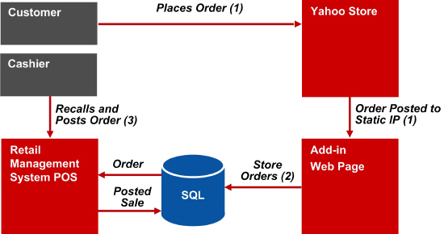

The manual Yahoo! integration add-in is easy to develop, but the store owner must log on to Yahoo! to download orders manually. This step can be eliminated by setting up Yahoo! to automatically post XML orders to a static IP address. The Exchange table in the database can then be updated by an HTML add-in.
Note: This process requires a static IP address.
The Yahoo! Post to IP integration process consists of the following steps.
A customer places an Internet order on the Yahoo! Web store.
Yahoo! automatically posts the order to a static IP address.
A user-created HTML add-in parses the local XML document and adds the data to the Exchange table in the Store Operations database. For more information about writing this add-in, see Manual Integration Add-In Details. Note that the Post to IP process requires an HTML add-in, while the manual process most likely uses a COM component add-in.
A cashier logs on to the POS and then presses CTRL+SHIFT+F10 to display the list of Internet orders stored in the Exchange table. The cashier selects an Internet order to process and uses the wizard to load the data from the Internet order into the current sales transaction. The wizard also checks the XML data for errors and adds new customers and shipping addresses if found. The cashier then handles the sales transaction as usual.
The following diagram illustrates this process:
